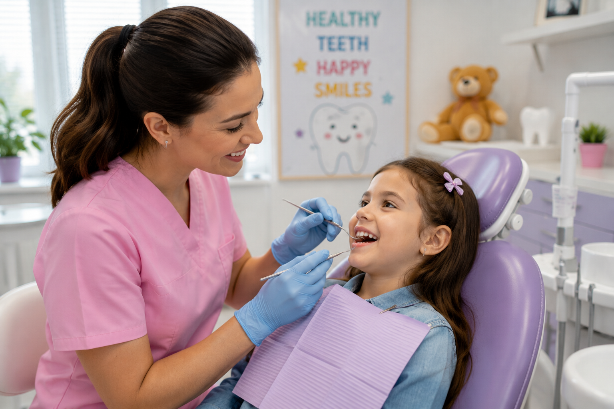
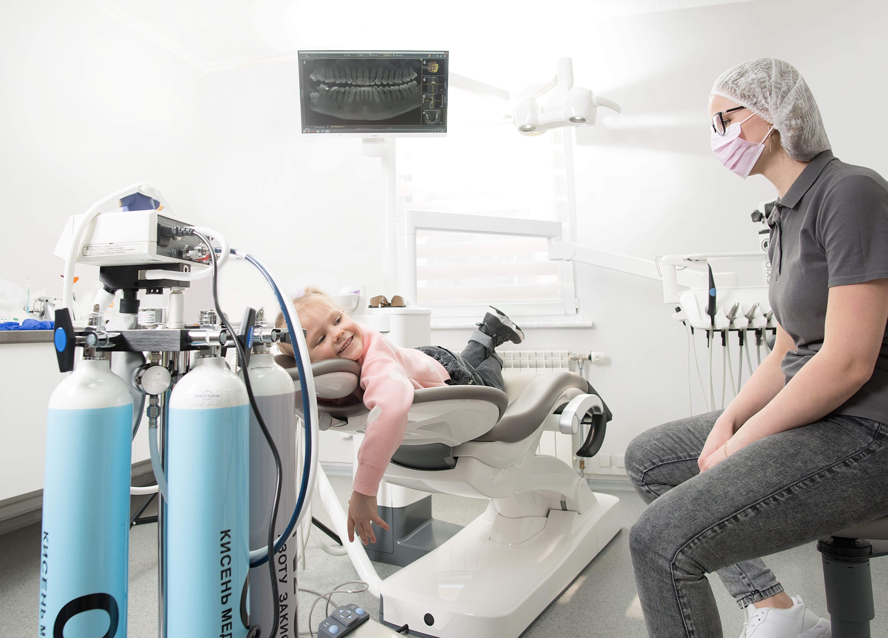

Is Your Child Afraid of the Dentist? Does Every Appointment End in
Tears?
We're Here to Change That!
At White Pearl Dental, we believe that a child's first dental experiences should be positive, gentle, and even enjoyable. We know that fear often comes from the unknown, so we take the time to earn every child's trust, making each visit calm, comfortable, and stress-free. With a caring team and a friendly atmosphere, we help little smiles grow with confidence.. Our goal is to make every child feel safe, calm, and comfortable during every visit.
Gentle & Caring Approach
Every child is treated with patience, kindness, and respect. We create a calm environment that helps children feel safe from the moment they arrive.
Child-Friendly Experience
We explain every step in simple words, helping children understand what is happening and reducing fear of the unknown.
Healthy Smiles for Life
We focus not only on today's treatment but also on building healthy habits and positive dental experiences for the future.
A gentle introduction that helps children feel comfortable and safe.

Keep little smiles healthy with gentle cleaning and preventive care.
Comfortable, child-friendly treatment with a gentle approach.
Fast care when your child has pain, swelling, or a dental injury.

Regular examinations help prevent problems before they become serious.
Teaching children simple habits for healthy teeth and confident smiles.